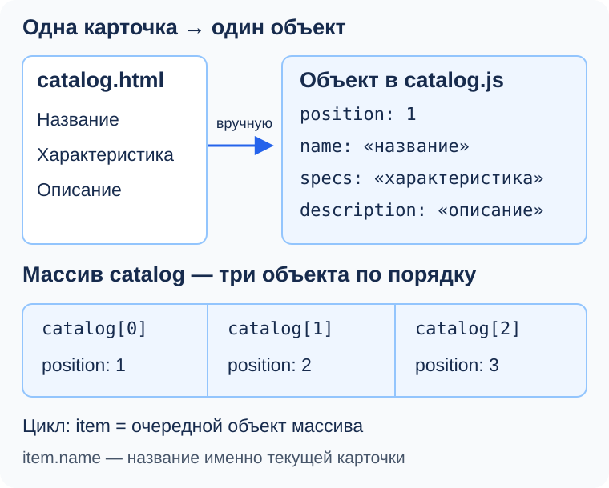
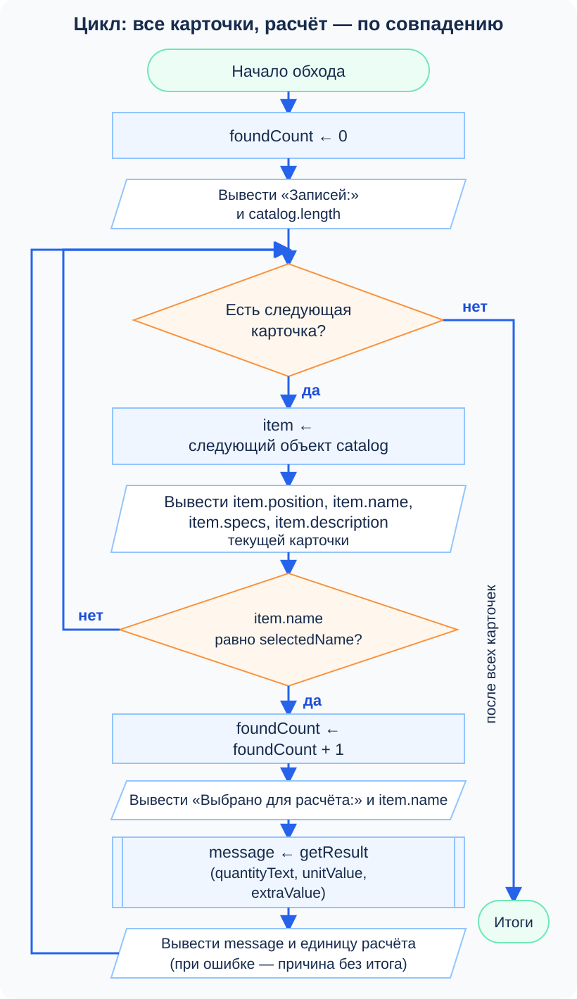
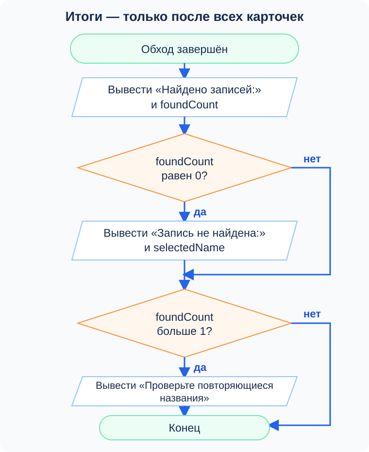
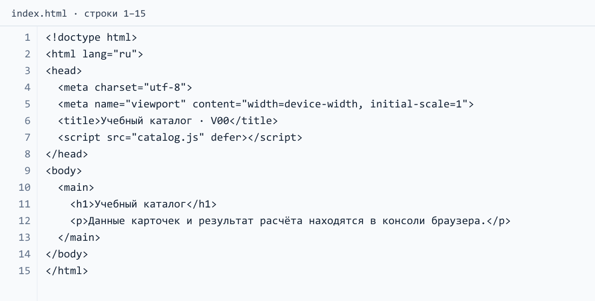
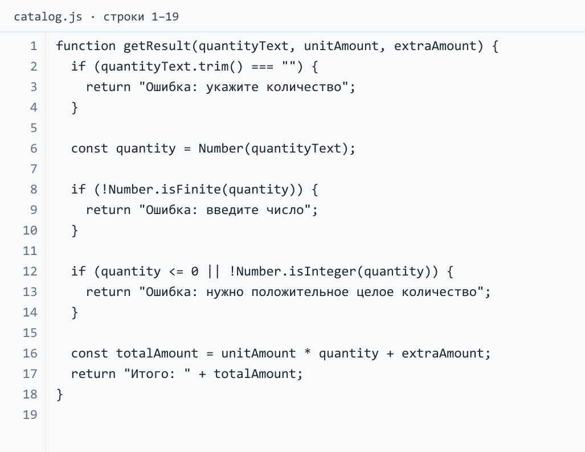
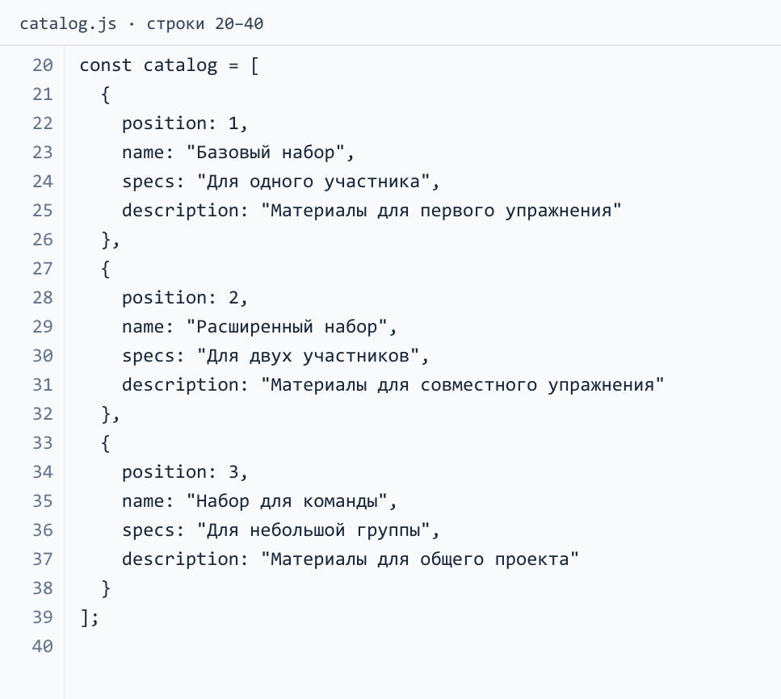
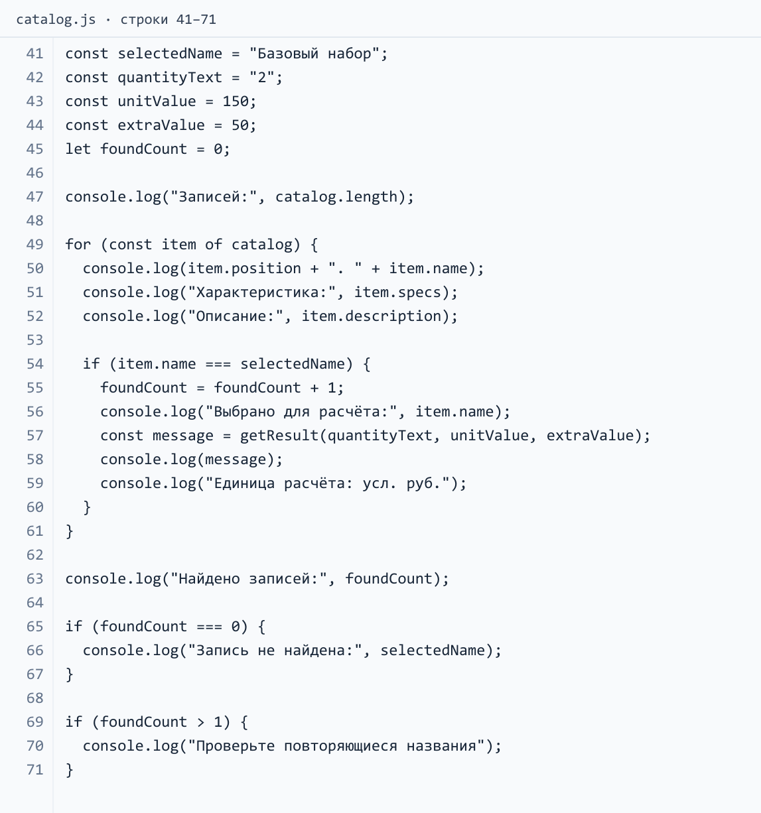

JavaScript — массивы, циклы и простые объекты
Индивидуальные задания
- Вариант 01
- Вариант 02
- Вариант 03
- Вариант 04
- Вариант 05
- Вариант 06
- Вариант 07
- Вариант 08
- Вариант 09
- Вариант 10
- Вариант 11
- Вариант 12
- Вариант 13
- Вариант 14
- Вариант 15
- Вариант 16
- Вариант 17
- Вариант 18
- Вариант 19
- Вариант 20
- Вариант 21
- Вариант 22
- Вариант 23
- Вариант 24
- Вариант 25
- Вариант 26
- Вариант 27
- Вариант 28
- Вариант 29
- Вариант 30
- Вариант 31
- Вариант 32
- Вариант 33
- Вариант 34
- Вариант 35
- Вариант 36
- Вариант 37
- Вариант 38
- Вариант 39
Свяжем функцию getResult из пары 20 с каталогом: карточки → объекты → массив → цикл → расчёт выбранной записи.
Результат: catalog.js в своей папке VariantNN-web: три карточки, общий вывод, выбор по названию и расчёт. Карточки берите из своего catalog.html и листа пары 18; числа — из своего листа пары 21. Номер и данные прежнего проекта сохраняются. Пример 00 — отдельное учебное задание.
Три карточки каталога и шесть элементов формы — разные вещи. Данные из HTML переносите вручную; сегодня программа выводит в консоль, страницу не меняет.
1. Подготовьте запуск и сохраните работающую функцию
Проверьте: откройте главную и консоль (F12 → Console / Консоль). В conditions.js должны работать свой расчёт и ошибка пустого количества.
Сделайте: создайте рядом catalog.js, перенесите своё работающее объявление getResult без старых проверочных вызовов. Она принимает три аргумента и возвращает строку ошибки или Итого: с суммой.
В index.html замените имя подключённого файла на:
<script src="catalog.js" defer></script>
Оставьте одно подключение программы, старые файлы сохраните. Временно выведите «Данные каталога запущены», сохраните файлы и обновите страницу. Увидев строку, уберите её. Дальнейшие шаги пишите после закрывающей скобки функции.
2. Найдите данные одной настоящей карточки
На схемах используются имена из программы: catalog, item, selectedName, foundCount, message. = означает присваивание, как в JavaScript; === — сравнение, ромб — проверку условия. Стрелки между блоками показывают порядок выполнения. Русские подписи поясняют действия.

Где: свой catalog.html рядом с редактором. Найдите у первой карточки заголовок, характеристику и описание.
Вариант 00: «Базовый набор», «Для одного участника», «Материалы для первого упражнения». Числа 150 и 50 берутся отдельно из расчёта пары 20, а не из этой карточки.
Для одного синтетического набора запись могла бы начинаться так:
const sample = {
name: "Базовый набор",
specs: "Для одного участника"
};
console.log(sample.name);
Объект объединяет свойства записи: sample — весь объект, sample.name — одно свойство через точку. Двоеточие отделяет имя от значения, запятая — свойства друг от друга.
Сделайте после функции: объект firstItem со своими данными:
| Свойство | Значение |
|---|---|
position |
Число 1 — исходный номер |
name |
Точный заголовок карточки |
specs |
Точная характеристика |
description |
Точное описание |
Проверьте: выведите название, характеристику и описание firstItem, сверьте с браузером. firstItem.title вместо firstItem.name даст undefined: имя должно совпадать точно.
Добавьте к описанию в JavaScript слово «тест» и обновите страницу: изменится консоль, HTML останется прежним. Верните текст.
3. Объедините карточки в массив
Массив хранит значения по порядку. Опыт в консоли:
const labels = ["Первый", "Второй"];
console.log(labels[0]);
console.log(labels.length);
[] создают массив, запятые разделяют элементы. Индексы начинаются с 0: labels[1] — второй, labels[2] отсутствует (undefined). length — число элементов; здесь выводятся «Первый» и 2.
Сделайте в catalog.js: замените firstItem массивом catalog:
- Объявление начните
const catalog = [, закройте];. - Внутри оставьте объект первой карточки:
{}и свойства, безconst firstItem =. - Через запятые добавьте ещё два объекта своих карточек.
- Имена четырёх свойств одинаковые, значения свои;
position— 1, 2, 3. - Обращения к
firstItemзамените обращениями к элементамcatalog.
Пример обращения к одному полю:
console.log(catalog[0].name);
[0] получает первый объект, .name — его название. position хранит исходный номер и не управляет индексом (см. схему). Проверьте: все три названия по индексам и catalog.length — должно быть 3. Уберите временные выводы.
4. Получите весь каталог одним циклом
Цикл повторяет команды. Опыт с другим массивом:
for (const label of ["Первый", "Второй"]) {
console.log(label);
}
for...of получает элементы по порядку: label сначала «Первый», затем «Второй». Тело в {} выполняется для каждого; для пустого массива — ни разу.
Сделайте после массива: свой цикл по catalog, текущий объект назовите item; его название — item.name.
Соберите внутри цикла три строки для каждой карточки:
- Исходный номер, точка с пробелом, название.
- Подпись «Характеристика:» и соответствующее свойство.
- Подпись «Описание:» и соответствующее свойство.
Образец соединения частей текста, не готовый цикл:
console.log(sample.name + " — " + sample.specs);
Перед циклом выведите «Записей:» и длину массива. Проверьте: один цикл даёт три блока, девять строк сведений.
Сверьте блоки с HTML: порядок, название, характеристика, описание. Трижды первая карточка — проверьте item вместо catalog[0]; [object Object] — выведите свойство вместо целого объекта.
5. Соедините выбранную карточку с расчётом пары 20
Схема показывает весь алгоритм; сначала добавьте выбор и вызов, затем счётчик из шага 6. Готовая функция пары 20 остаётся отдельным блоком.

После массива, до цикла, объявите данные выбора по своему листу пары 19:
| Имя в программе | Данные своего листа |
|---|---|
selectedName |
itemName — выбранное название |
quantityText |
Количество строкой |
unitValue |
Норма или цена на единицу |
extraValue |
Одна общая добавка |
Название и количество — строки; нормы и добавка — числа. unitValue передаётся в параметр unitAmount, extraValue — в extraAmount. Сохраняйте единицы варианта: например, «Всего грунта, литры». Нормы известны только для выбранной записи; цены остальным карточкам не добавляйте.
В конце тела цикла: условие совпадения названия с selectedName. Форма сравнения из пары 20:
sample.name === selectedName
Замените учебное имя своим именем текущего объекта. Внутри ветви:
- Выведите подпись «Выбрано для расчёта:» и название текущей записи.
- Вызовите
getResult, передавquantityText,unitValue,extraValueв таком порядке. Возвращённое сообщение сохраните в переменнуюmessage, как на схеме. - Выведите полученное сообщение и поясните единицы своего расчёта. При ошибке количество единиц результата не вычисляется: функция возвращает текст причины.
Проверьте: предскажите проход с расчётом, запустите и сверьте итог с парой 19. Все карточки видны, расчёт относится к совпавшей записи.
6. Проверьте, действительно ли запись найдена
Счётчик считает совпадения названия. Опыт:
let attempts = 0;
attempts = attempts + 1;
console.log(attempts);
Получится 1. Нужен let: значение изменяется.

Сделайте по двум схемам:
- Перед циклом объявите
foundCountсо значением 0. - Внутри ветви совпадения названия увеличивайте его на 1. Считайте найденные записи, даже если их расчёт вернул ошибку количества.
- После закрывающей скобки цикла выведите подпись «Найдено записей:» и счётчик.
- Если счётчик равен 0, выведите «Запись не найдена:» и искомое название.
- Если счётчик больше 1, выведите предупреждение «Проверьте повторяющиеся названия».
Обнуление — до цикла, итоговые проверки — после него. При дубле расчёт выполняется для каждого совпадения, предупреждение появляется после обхода. Ошибка количества не отменяет найденную карточку.
Проследите по стрелкам перед запуском:
- Совпала только вторая карточка. Что выводится для первой и куда идёт её ветвь «нет»?
- Совпали первая и третья, количество пустое. Сколько раз вызовется функция, какой счётчик дойдёт до итоговой схемы?
- Совпадений нет. Будет ли вызов функции и какая ветвь выведет причину отсутствия расчёта?
7. Испытайте программу изменением данных
После каждого опыта сохраните файл, обновите главную, объясните вывод и верните исходные данные. Отдельный отчёт не нужен.
| Опыт | Что изменить | Что должно произойти |
|---|---|---|
| Исходный запуск | Ничего | Все три блока карточек; один расчёт; одно совпадение; итог совпал с парой 19 |
| Другой объём | Увеличить своё строковое количество на 1 | Числовой итог увеличится ровно на unitValue, добавка остаётся одной |
| Пустое поле | quantityText сделать " " |
У выбранной карточки сообщение об отсутствии количества; найдено по-прежнему 1 |
| Неверный текст | Количество сделать "два" |
Сообщение «введите число», без рассчитанного итога |
| Недопустимое число | По очереди "0" и "1.5" |
Сообщение о положительном целом количестве |
| Нет такой записи | К selectedName добавить «тест» |
Все карточки видны; найдено 0; есть сообщение об отсутствии записи, расчёта нет |
| Другой порядок | В исходном тексте массива временно поменять местами два целых объекта | Блоки поменяются местами; расчёт останется связан с нужным названием, а не с индексом |
| Повтор названия | Только название другой записи временно сделать равным выбранному | Найдено 2; расчёт выполнится дважды; появится предупреждение о дубле |
Дубль — намеренная ошибка данных: программа предупреждает после расчётов. Восстановите действительное название.
8. Покажите законченную работу
Покажите: исходные данные, catalog.js, подключение в HTML, три карточки и вывод консоли. Выполните два изменения по выбору преподавателя: количества и поиска.
Готовая обязательная работа включает:
- Три объекта с настоящими сведениями карточек.
- Один цикл с полным выводом карточек.
- Выбор по названию и своя функция пары 20.
- Счётчик и оба предупреждения.
- Все опыты с восстановлением данных.
Укажите в своём коде массив, один объект, его свойство, текущую запись цикла и аргументы функции. Объясните, почему перестановка объектов не переносит расчёт на другую карточку и почему неверное количество не означает отсутствие карточки.
Если что-то не получилось
| Симптом | Где искать причину |
|---|---|
SyntaxError |
Между свойствами двоеточия и запятые; между объектами запятые; квадратные и фигурные скобки закрыты |
undefined вместо текста |
Точное имя свойства и индекс 0–2; нужное свойство есть у каждого объекта |
ReferenceError после цикла |
item существует внутри цикла; итоговый счётчик объявлен перед ним |
| Расчёт повторяется у всех | Вызов функции должен быть внутри условия совпадения |
| Найдено 0 при видимой карточке | Сравните selectedName и item.name: пробелы, регистр, орфография |
| Найдено 1 вместо 2 в опыте с дублем | Счётчик случайно обнуляется внутри цикла или увеличивается вне ветви |
| Итог не совпал с парой 19 | Порядок аргументов, свои числа, одна добавка на весь расчёт |
| В консоли старая программа | Имя файла в src, сохранение обоих файлов и обновление страницы |
Если обязательная часть готова раньше
Выберите один полезный шаг и покажите проверку:
- Поиск по части названия. В отдельной переменной задайте непустой фрагмент настоящего названия. Строковый метод
includesотвечает, есть ли такой фрагмент:"Базовый набор".includes("набор")даётtrue. Напишите отдельный цикл, который выводит только названия с этим фрагментом и считает их. Проверьте точное совпадение, отсутствующий фрагмент и фрагмент, встречающийся в нескольких названиях, если такой есть. Регистр учитывается. Пустая строка содержится в любой строке: предусмотрите для неё сообщение «Укажите текст поиска». Цены в этот поиск не добавляйте. - Контроль полноты карточек. Отдельным циклом обнаружьте пустые после
trim()названия или описания. Выведите номер проблемной карточки и посчитайте проблемы. Временно очистите одно описание, увидьте предупреждение, восстановите текст. Все свойства по-прежнему строки, обработка произвольных типов не требуется. - След выбранного вызова. Для допустимого и ошибочного количества объясните путь от текущего объекта через условие к аргументам
getResultи первому выполненномуreturn. Спрогнозируйте"Infinity"и отрицательное количество, затем проверьте их в своём файле.
Подсказки для разбора
На изображениях разобран постоянный вариант 00 с учебными наборами. После самостоятельной сборки раскройте нужную подсказку и сравните программу со своей. Код показан изображениями. Части JavaScript идут подряд и составляют один файл catalog.js; номера строк продолжаются. Каждое изображение можно открыть отдельно и увеличить.
Подключение программы: index.html
Для отдельного запуска сохраните index.html и catalog.js рядом. В собственном проекте используйте существующую главную страницу с подключением нового файла.


catalog.js, часть 1: функция расчёта
Это функция пары 20 с теми же правилами количества. Она возвращает строку; вывод сообщения выполняется позже, внутри обхода каталога, только для совпавшей записи.


catalog.js, часть 2: данные трёх карточек
Сравните один объект с одной карточкой. У всех записей одинаковые имена свойств, а значения различаются. В своём проекте сохраняйте реальные карточки и данные своего варианта; учебные наборы служат образцом структуры.


catalog.js, часть 3: выбор, обход и итог
Сохраните файлы в UTF-8, откройте HTML, затем консоль и обновите страницу. Для каждого опыта изменяйте одно значение, сохраняйте и запускайте снова. При каждом запуске счётчик начинается с нуля. item доступно только в теле цикла, а foundCount объявлен до цикла и доступен после него.


В опыте с повторяющимся названием намеренно получаются два расчёта: счётчик выявляет неоднозначные данные, а не блокирует выполнение заранее. После опыта восстановите название второй записи. Если трудно проследить весь цикл, отдельно разберите один проход с несовпадением и один с совпадением. Затем выполните программу и сверьте результат.